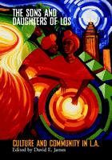

<body bgcolor="#FFFFFF" text="#000000" link="#0000FF" vlink="#CC0000" alink="#CC0000"><center><hr width="350" size="1" align="center" noshade>Breathing a new city of Los Angeles to life, through urban art and performance<hr width="350" size="1" align="center" noshade><p><a href="https://cdcshoppingcart.uchicago.edu/Cart/ChicagoBook.aspx?ISBN=9781592130122&&PRESS=temple" target="_top">Buy this book!</a> | <a href="https://cdcshoppingcart.uchicago.edu/Cart/Cart.aspx?PRESS=temple" target="_top">View Cart</a> | <a href="https://cdcshoppingcart.uchicago.edu/Cart/Cart.aspx?PRESS=temple" target="_top">Check Out</a></p><p></p></center><!--none//--><h1>The Sons and Daughters of Los</h1>
<H2>Culture and Community in L.A.</H2>
<h3>edited by David E. James</h3>
<P>cloth 1-59213-012-7 $85.50, Feb 03, <FONT COLOR=#990033>Available</FONT>
<br>paper 1-59213-013-5 $37.95, Feb 03, <FONT COLOR=#990033>Available</FONT>
<br>Electronic Book 1-43990-137-6 $37.95 <FONT COLOR=#990033>Available</FONT>
<BR> 264 pp
7x10
50&nbsp;halftones
</P><BLOCKQUOTE><I>"...The word </I>Los<I> became current among working-class Latinos, many of them displaced from their homelands by the global forces of capital and empire, as the name for the city in which they made their homes, a city where they hoped to find liberty and fellowship..."</i>
<br>&#151<b>from the Introduction</b><i></I></BLOCKQUOTE>
<p>Los Angeles. A city that is synonymous with celebrity and mass-market culture, is also, according to David James, synonymous with social alienation and dispersal. In the communities of Los Angeles, artists, cultural institutions and activities exist in ways that are often concealed from sight, obscured by the powerful presence of Hollywood and its machinations.
<p>In this significant collection of original essays, <I>The Sons and Daughters of Los</I> reconstructs the city of Los Angeles with new cultural connections. Explored here are the communities that offer alternatives to the picture of L..A. as a conglomeration of studios and mass media. Each essay examines a particular piece of, or place in, Los Angeles cultural life: from the Beyond Baroque Poetry Foundation, the Woman's Building, to Highways, and LACE, as well as the achievements of these grassroots initiatives. Also included is critical commentary on important artists, including Harry Gamboa, Jr., and others whose work have done much to shape popular culture in L.A. The cumulative effect of reading this book is to see a very different city take shape, one whose cultural landscape is far more innovative and reflective of the diversity of the city's people than mainstream notions of it suggest.
<p><I>The Sons and Daughters of Los</I> offers a substantive and complicated picture of the way culture plays itself it out on the smallest scale&#151in one of the largest metropolises on earth&#151contributing to a richer, more textured understanding of the vibrancy of urban life and art.
<BR>&nbsp;<h2>Excerpt</h2><P>Excerpt available at <a href="http://www.temple.edu/tempress">www.temple.edu/tempress</a></p>
<BR>&nbsp;<h2>Reviews</h2>
<p><i>"The predisposition for universalizing forms of taste that favor timeless over timely work&#151the sensibility evident in most professional critics and historians of culture&#151militates against the study of local, tendentious, oppositional forms of endeavor. In Los Angeles, within the belly of the beast, a flourishing oppositional culture, ignored by the dominant media, exists. This book brings to light a remarkable set of artistic, institutional, and cultural practices of exemplary value. James is an excellent writer and dedicated scholar."</i>
<br>&#151<b>Bill Nichols</b>, Professor and Director of the Graduate Program in Cinema Studies at San Francisco State University
<p><i>"This is an important, multi-vocal, innovative and definitive volume on alternative community arts and cultural spaces as they are envisaged and nurtured in Los Angeles. The city and its innovative cultural institutions have long deserved such a passionate, resonant and articulate perspective as David James provides for them here in this superlatively edited volume."</i>
<br>&#151<b>Erika Suderburg</b>, Professor, Film and Visual Culture Program and the Department of Art, University of California, Riverside
<p>Read a <a href="../authors/1631_review.pdf">review</a> from <I>Museum News</I>, November/December 2003 (pdf).
<BR>&nbsp;<h2>Contents</h2><P>
<p>Contents
<br>Acknowledgments
<br>1. Introduction: The Sons and Daughters of Los &#150 David E. James
<br>2. Peripheral Outlaws: Beyond Baroque and the Los Angeles Poetry Renaissance &#150 Bill Mohr
<br>3. The Los Angeles Woman's Building and the Feminist Art Community, 1973-1991 &#150 Laura Meyer
<br>4. Fortifying Community: African American History and Culture in Leimert Park &#150 Eric Gordon
<br>5. Considering the Art World Alternatives: Lace And Community Formation in Los Angeles &#150 Claudine Isé
<br>6. Not History: Remarks on the Foundation for Art Resources, 1977-1998 &#150 Sande Cohen
<br>7. Highways Performance Space: Communities-in-Transit &#150 Meiling Cheng
<br>8. Signifying Nations: Cultural Institutions and the Korean Community in Los Angeles &#150 Jiwon Ahn
<br>9. All Over The Map: A History of L.A. Freeways &#150 James M. Moran
<br>10. Self-Help Graphics: Tomás Benitez Talks to Harry Gamboa Jr.
<br>11. Unorthodox Mystics: Swans that Flock to the Vedanta Society of Southern California &#150 Nithila Peter
<br>12. Popular Cinemas in Los Angeles: The Case of Visual Communications &#150 David E. James
<br>About The Contributors
</P><BR>&nbsp;<H2>About the Author(s)</H2>
<P><b>David E. James</b> is Professor in the School of Cinema-Television at the University of Southern California. He is the author or editor of five books, including, most recently, <I>Power Misses: Essays Across (Un)Popular Culture</I>.</P>
<P>Contributors: Jiwon Ahn, University of Southern California; Meiling Cheng, University of Southern California; Sande Cohen, California Institute of the Arts; Harry Gamboa, Jr.; Eric Gordon, University of Southern California; Claudine Isé, University of California, Los Angeles, Laura Meyer, University of California, Los Angeles; Bill Mohr; James Moran; Nithila Peter, University of Southern California, and the editor.</P>
<BR><H2>Subject Categories</H2>
<p><A HREF="/tempress/american.html" TARGET="_top">American Studies</a>
<BR><A HREF="/tempress/mass_media.html" TARGET="_top">Mass Media and Communications</a>
<BR><A HREF="/tempress/art.html" TARGET="_top">Art and Photography</a>
</p>
<BR><h2 class="inpageheading">In the series</H2>
<P><I><a href="http://www.temple.edu/tempress/wide_angle.html" onMouseOver="window.status='Click for other books in this series!'; return true;" onMouseOut="window.status=''; return true;" target="_top">Wide Angle Books</a></i>, edited by <a href="http://www.temple.edu/tempress/authors/barnouw.html" target="_top">Erik Barnouw</a>, Ruth Bradley, Scott MacDonald, and Patricia Zimmermann.
</p><p>The mission of <I>Wide Angle Books</I> is to document, chronicle, and honor those
institutions that have worked effectively to maintain a public presence and public spaces for alternative forms of media. These books recognize that institutional support of media happens at a variety of levels in a film series, in a video distribution organization, in a transnational digital network, in a grassroots production organization and in locations across the globe. Individual volumes in the series focus on such forms of primary documentation as letters, institutional records, and oral histories, presented and contextualized by leading media history scholars.</p>
<p align="center"><a href="https://cdcshoppingcart.uchicago.edu/Cart/ChicagoBook.aspx?ISBN=9781592130122&&PRESS=temple" target="_top">Buy this book!</a> | <a href="https://cdcshoppingcart.uchicago.edu/Cart/Cart.aspx?PRESS=temple" target="_top">View Cart</a> | <a href="https://cdcshoppingcart.uchicago.edu/Cart/Cart.aspx?PRESS=temple" target="_top">Check Out</a></p><p><font face="Arial" size="1"><a href="copyright.html" onMouseOver="window.status='Web Copyright Policy';return true;" onMouseOut="window.status=''" title="Web Copyright Policy">&copy;</a> 2015 <a href="http://www.temple.edu" target="new" onMouseOver="window.status='Link to Temple University home page';return true;" onMouseOut="window.status=''" title="Link to Temple University home page">Temple University</a>. All Rights Reserved. http://www.temple.edu/tempress/titles/1631_reg.html</font></p>